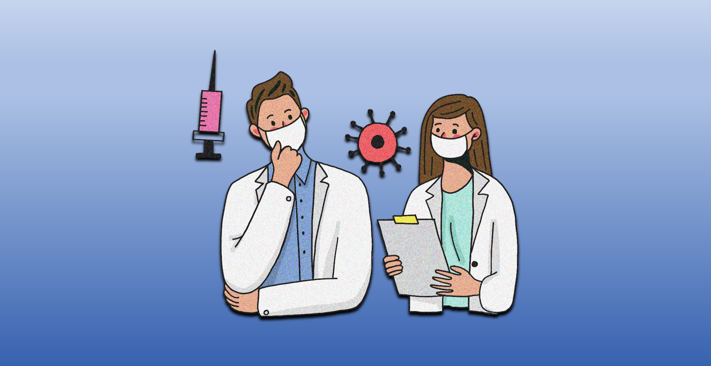
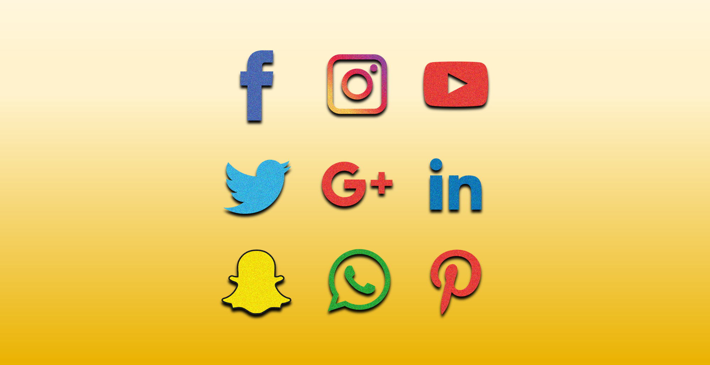
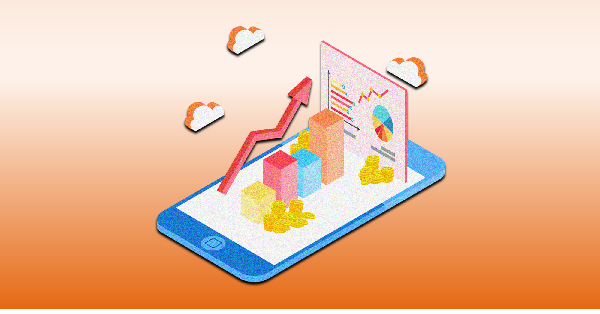
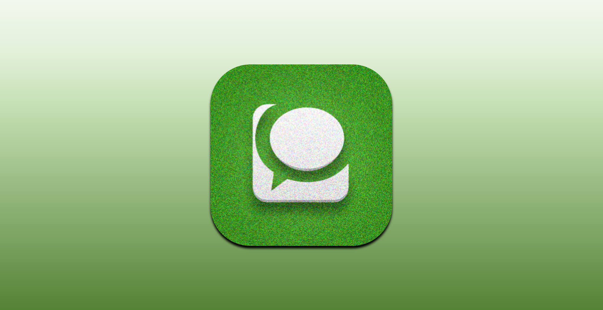

2019년 말에 발생한 코로나19는 2020년에 직접적으로 우리의 일상에 영향을 미치게 되었고 2021년 현재도 진행중입니다.
우리 모두가 여실히 느끼고 있는 것처럼 코로나19는 이 세상을 완전히 바꾸고 있습니다.
오죽하면 BC(Before Corona)와 AC(After Corona) 라는 말이 나올 정도이니 말이죠 !
전 세계의 많은 전문가들이 코로나19 팬데믹에서 벗어나더라도 세계 질서는 이전과 같지 않을 것이라고 예측하고 있는데요.
산업이 급격히 재편되고 구조조정이 일어나는 등 여러 분야들이 포스트코로나 시대에 맞춰 변화하고 있지만,
그 중 특히 우리 일상생활 속에서 많은 영향을 끼치는 미디어 속의 OTT 를 살펴보려고 합니다 :)

코로나19가 우리 생활 전반의 변화를 초래했고, 그 변화의 중심에 디지털 기술이 자리하고 있기 때문인데요. 그리고 여전히 꺾이지 않은 코로나19의 기세로 인해 비대면 기술, 즉 디지털에 대한 사회적 요구가 지속되고 있습니다.
다시는 올드 노멀로 돌아갈 수 없을 것이라는 전망 속에서, 뉴노멀에 익숙해지고 있는 우리의 생활은 점차 디지털 라이프로 고착돼 가고 있는 모양새죠.
이처럼 우리 사회가 디지털로 라이프를 향해 가는 방향은 의심의 여지없이 확실합니다.
‘코로나19 이후, 미디어 라이프의 변화’를 살펴봅시다!

언택트 소비문화중 하나로 떠오르는 온라인쇼핑.
우리 실생활에 큰 편리함을 가져왔다는 것을 실감할 수 있습니다. 시간절약과 다양한 초이스를 멀티로 볼 수 있다는 것은 큰 장점이 아닐 수가 없는데요!
그렇지만, 본문과 같이 오프라인 매장들에게 부여되는 타격이 크기 때문에 우리에게 다양한 시사점이 요구됩니다.
코로나바이러스가 확산되면서 접촉을 하지 않는 '언택트(untact)' 로 구매에 대한 소비 형태의 변화를 알아봅시다 :)

블로그 활성화에 대한 모든 것
1. 매일 꾸준한 1일 1포스팅
2. 내 블로그의 체류시간과 페이지뷰를 높이는데 힘을 써라
3. 정보성 있는 양질의포스팅을 작성하는 것이 중요!
4. 내부 링크를 많이 사용해라
5. 서로 이웃 맺기를 많이 해라
6. 그리고 그 이웃들과 꾸준한 소통을 하라

“대리만족 느껴요”… 코로나 시국, 여행 유튜브에 열광하는 2030세대
코로나19 이전에도 유튜브는 전세계적으로 대중화가 되어 있었습니다.
하지만 현재 코로나19로 점점 대면적인 만남이 줄어들고 나서부터 '유튜브'는 더욱 더 활성화 되고 있는데요!
여행을 가기엔 어려운 지금, 유튜브로 여행을 떠나볼까요 ?